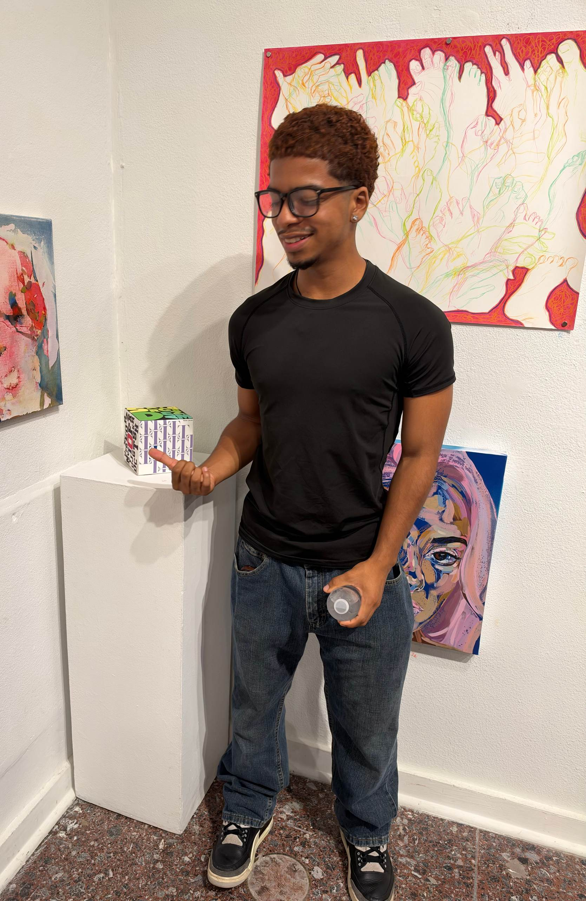

About Me
Neil Arias
I’m a graphic designer and photographer who was raised in Miami, Florida.
Being born in Peru and visiting often has allowed me to explore my culture which can be seen through
some of my artworks. Soccer has also always been a part of my life which I try and implement
in to my pieces and creative decisions. I’m a person with a vast amount of hobbies that include; drawing,
collecting, running, cooking and working out. There are many styles within the graphic design industry that
interest me like “Post Modernism Posters”, “Bold Typography & Brutalist”, “High-Contrast Pop Art”, etc.
Some photography styles that I enjoy include “Minimalism”, “Liminal Space” and “Freeze-Motion”.
The reason why I got into graphic design was through high school when I found a huge
interest in movie posters, logos and overall typography. I later graduated with a Photoshop, Illustrator and
InDesign certificate and joined “New World School of the Arts”. While being in NWSA, one of my art pieces
was accepted to be in the 40th Anniversary Art Gallery. Getting into photography happened around the same
time when I started to enjoy how people would capture frames in soccer games and how I wanted to
recreate that which I ended up doing for my older sister’s soccer team. When working on my projects I always
find new things to improve on and ways I can grow. I’m the type of person who loves to collaborate so I would
enjoy to hear from anyone who would like to work together.
